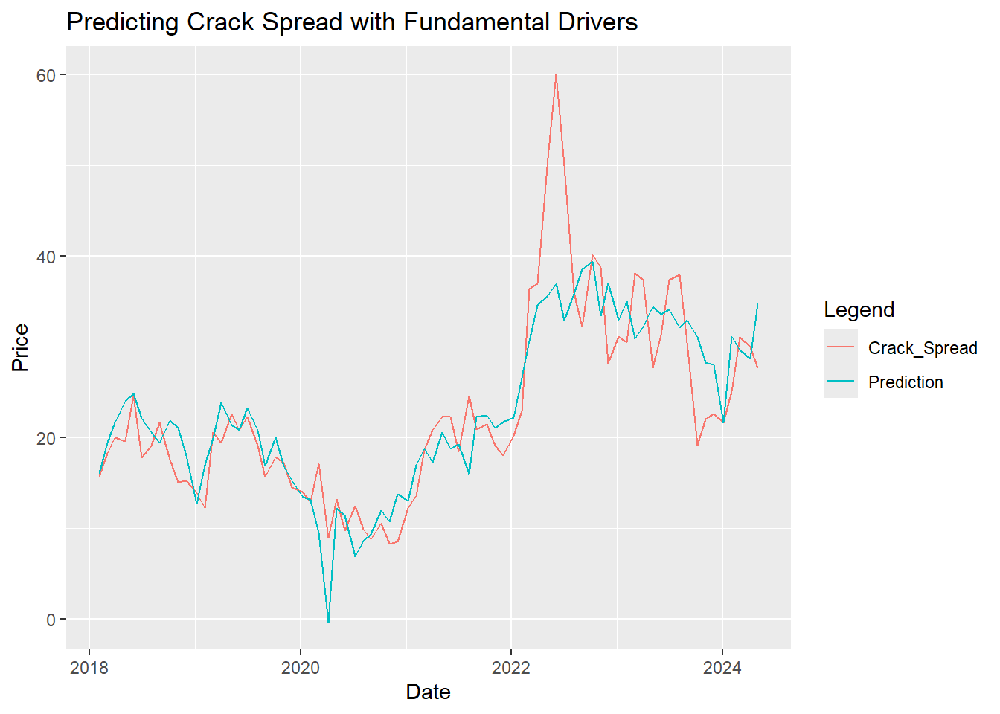
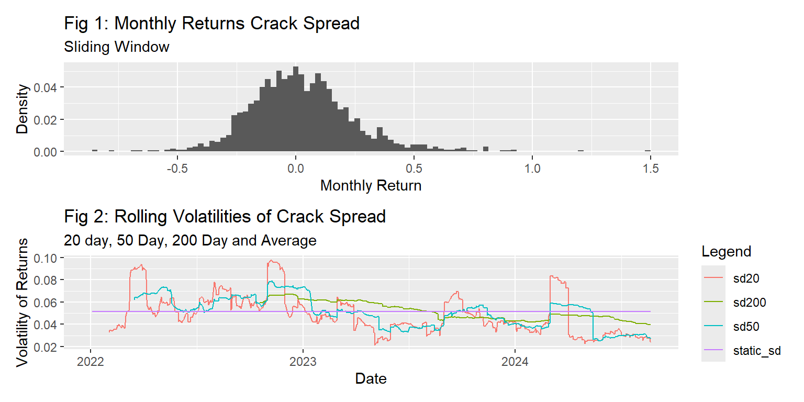
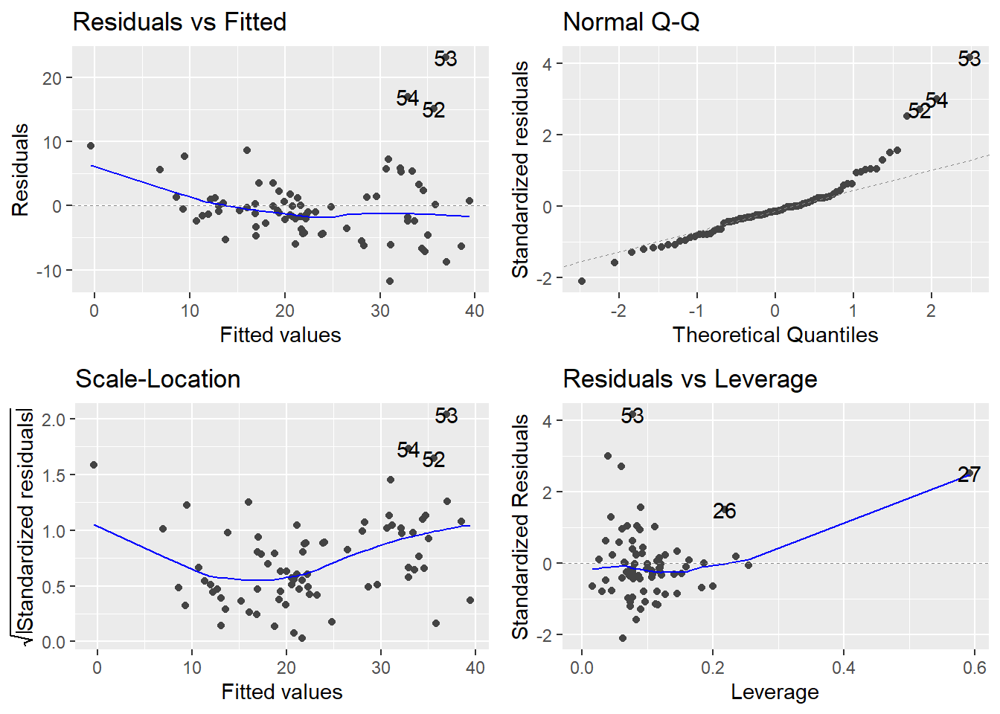

Report
Recommendation
The 3-2-1 crack spread looks bullish based on market fundamentals. Our model predicts a crack spread of 29.95 using forecasted values and 28.65 using the last observable data points. Based on the most recent 3-2-1 crack spread price of 21.31, a long position in the crack spread is recommended.
Trading Strategy
A few options exist to enter into a long position in the crack spread. Firstly, one can enter using a long crack spread futures contract. By locking in the price of the crack spread today, we will profit if the crack spread increases.
The second option is to enter long into 2 gasoline and 1 heating oil contract, and then enter short into 3 crude oil contracts. Note that crude oil contracts volumes are 1000 barrels on the CME and RBOB and Heating Oil are 42,000 gallons (1000 Barrels). Using CME futures, this position emulates a crack spread position on 3000 barrels processed. On other exchanges the ratio of contracts may have to be adjusted accordingly.
Note: In the event market data supports that opposite position at the time of reading, a short position can be obtained by reversing the described strategy exactly.
Rationale
The prediction is driven by a regression model (shown above) consisting of 9 market drivers, with sources from the Energy Information Administration, Federal Reserve Economic Data, Yahoo Finance, and Federal Highway administration. Since the regression model makes use of aligned monthly data points, without interpolation, it’s better used when entering longer time frame positions with a clear stop loss and exit strategy. This model attempts to predict current prices using current fundamental market levels. The key idea is that when prices and our predictions are out of sync, the price will normalize to our current model prediction in the future. This lets us choose which position to enter based on whether our prediction is higher or lower than the current price.
Because our predictors are updated at different frequencies and different time lags, forecasting models are developed for each indicator. STL decomposition is used to capture larger structural patterns such as seasonality and trend, and ARIMA models are then used to capture remaining dependency in the residuals. This allows us to predict today’s fundamentals levels based on previous seasonality and trend. Because time series forecasting expands in uncertainty the further forward in time you forecast, a prediction using the last observable data points is also provided. This lets us compare how much the time series forecast is influencing the recommended decision relative to the last observable data points.
With no reversals between dependendent and independent variables, our model forecasts an upside potential of 8.64 per barrel.
Fundamental Market Drivers
Data was selected by a combination of higher correlations with the crack spread prices as well as higher data frequency supporting more timely decision making. See “How does each driver factor into forecasted price?” in the appendix for a more detailed breakdown.
Demand Side: -Truck Tonnage -Billion Miles Driven -US Crude Net Imports
Supply Side: -US Crude Inventory -US Crude Production -US Gasoline Production -US Crude Net Imports -Percent Operable Utilization (Refineries) -Gasoline Stocks, Conventional
RBOB Stocks and Plant Utilization were also considered, but removed due to high VIF and low P Values.
Risk/Reward
Model Risk:
Different time periods may have different equilibriums, even if all market drivers are at the same level. For example, technology can make production and refinement cheaper, which in turn means refineries are willing to produce more under less profitable conditions, which would drive the spread closer together. It is important to consult the team to determine what a competitive time frame entails. If the time frame in fact needs to be shortened, longer time frames can be used for the market drivers to capture long term seasonal effects, and shorter time frames can be used to train the underlying regression model.
A second form of model rick comes from how linear regressions function. We have assumed here that our selected variables drive the crack spread, and that crack spread is the dependent variable. We know in fact, that this is not true. The various prices and supply/demand levels are cyclic. A high crack spread may incentivize processing at a faster pace, and thus affecting existing inventories. Existing inventories being high or low can affect the crack spread. In some cases our model will respond to the levels of the independent variables, where we see the crack spread converge to the expected level, and in some cases, our independent variables will change, adjusting our prediction.
With the previous factors in mind, assuming no reversals between dependent and independent variables, our model forecasts an upside potential of 8.64 per barrel.
How then do we assess the underlying risk, knowing that our model’s effectiveness can be disrupted? Focusing on the riskiness of the underlying asset is crucial, since it gives us an unbiased standpoint separate from our model.
Below is a 10% Value at Risk on 1 month positions in the crack spread. This does not count for liquidity risk day to day, but gives us a sense of how much we can lose entering long today and exiting in a month from now (no model considerations).
To get a sense of the chances of getting closed out early due to daily volatility, we can observe the 20 and 50 day rolling volatilities for crack spread below:
From this we can conclude that our best outcome in the worst 10% of cases is r and that our daily volatility is much lower at this point of time, meaning less margin is required to sustain a 1 month position to close. If volatility increases long term, a model which focuses on a narrower time frame would likely be more sutiable.
Appendix
Regression

| R_Squared | Adj_R_Squared | SD | P_Val | Degrees_Freedom | AIC | BIC |
|---|---|---|---|---|---|---|
| 0.719456 | 0.6905765 | 5.798058 | 0 | 7 | 492.369 | 513.3456 |
| Market_Driver | Coefficient | Standard_Error | P_Val |
|---|---|---|---|
| US_Crude_Inventory | -0.0000566 | 0.0000055 | 0.0000000 |
| Truck_Tonnage_Index | 1.3417368 | 0.3405385 | 0.0001947 |
| US_Crude_Prod | -0.0001285 | 0.0000352 | 0.0005084 |
| B_Miles_Driven | 0.1354029 | 0.0529012 | 0.0127094 |
| US_Gasoline_Production | -0.0024429 | 0.0013334 | 0.0713117 |
| US_Conventional_Stocks_Unblended | -0.0001306 | 0.0001098 | 0.2382666 |
| US_Crude_NI | -0.0007536 | 0.0006563 | 0.2548664 |
| (Intercept) | 30.4375111 | 43.8930191 | 0.4903906 |

| VIF | |
|---|---|
| B_Miles_Driven | 3.227413 |
| US_Crude_Prod | 2.505679 |
| US_Gasoline_Production | 2.363249 |
| US_Conventional_Stocks_Unblended | 2.048704 |
| US_Crude_Inventory | 1.630329 |
| Truck_Tonnage_Index | 1.588773 |
| US_Crude_NI | 1.520674 |
How does each driver factor into forecasted price?
| Market_Driver | Value |
|---|---|
| US_Crude_Inventory | -93.864823 |
| Truck_Tonnage_Index | 153.315307 |
| US_Crude_Prod | -52.272435 |
| B_Miles_Driven | 38.147852 |
| US_Gasoline_Production | -23.458260 |
| US_Conventional_Stocks_Unblended | -20.595344 |
| US_Crude_NI | -1.756954 |
| (Intercept) | 30.437511 |
| Estimate |
|---|
| 29.95285 |